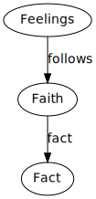

What do we do when we’re offended? Any form of hurt is grief. There is a sense of loss, they feel rejected and thus a loss to their self worth or percieved esteem. Have you thought that maybe we grieve God the Holy Spirit?
That’s what the Bible says. There are things that we do that grieves Him and thus prevents His power from manifesting itself in our lives.
Remember that God wants to hear His heart beating strongly in our lives.
Many Christians live powerless lives in regards to the H.S:
 We should not base our Christian life on feelings - but fact.
Eph 5:18
The secret to the Christian life is being controlled and filled with the spirit.
If God commands this then why do I need it? Just like how wine controls a drunk man so is how one who is filled with the Spirit is out of his natural character; he is controlled by the H.S. Gal 5:22 the fruit produced in us must come from a power source.
The Christian life isn’t difficult, but impossible. You cannot live it in the flesh. So how do you activate that power source?
What impedes the Spirit’s work in our lives?
Eph 4:30
The word grieve is a love word. You cannot grieve someone that doesn’t love you.
Eph 1:13
If you have trusted Christ by faith you cannot lose your salvation but you can block His fellowship.
If you find yourself an unhappy Christian then it could be that something within you is grieving the Holy Spirit. When He is pleased with your walk then He is released within your life.
What causes one to grieve the Holy Spirit?
Eph 4:22
Romans 6:6. Stop being slaves today. When we sin, God doesn’t change; we have moved.
Things that grieve the Holy Spirit (applied to the church at Ephesus):
Remember we could hurt the feelings of Christ and the Holy Spirit.